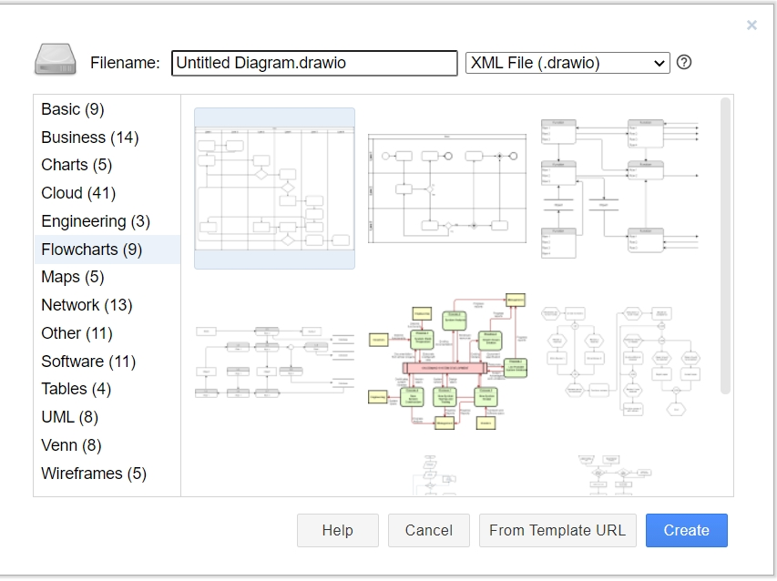
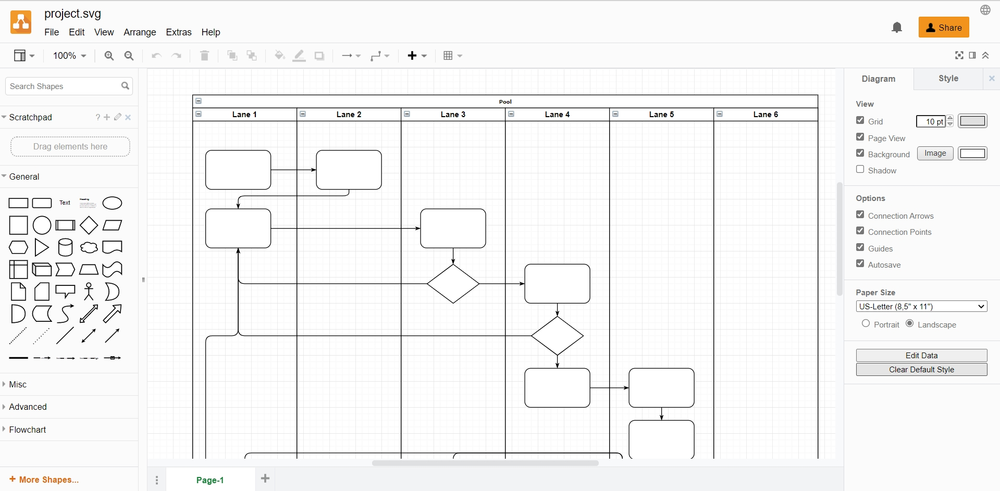

Graphical elements
Using graphics is an essential part of creating technical documentation. They help you convey complex information in a more understandable and clear way for the readers.
Raster images
Raster images, also known as bitmaps, are comprised of individual pixels of color. Each color pixel contributes to the overall image.
Raster images might be compared to pointillist paintings, which are composed with a series of individually-colored dots of paint. Each paint dot in a pointillist painting might represent a single pixel in a raster image. When viewed as an individual dot, it’s just a color; but when viewed as a whole, the colored dots make up a vivid and detailed painting. The pixels in a raster image work in the same manner, which provides for rich details and pixel-by-pixel editing.
Raster images are capable of rendering complex, multi-colored visuals, including soft color gradients. Digital cameras create raster images, and all the photographs you see in print and online are raster images.
There are different types of raster files: JPG, GIF, and PNG are examples, and each file type has its own nuances.
Raster images are ideal for photo editing and creating digital paintings in programs such as Photoshop and GIMP , and they can be compressed for storage and web optimized images.
How you can use a given raster image depends on its size and quality. Quality is often dictated by how many pixels are contained in an inch, expressed as pixels-per-inch or ppi; as well as the overall dimensions of the image, also expressed as pixels (for example, 5,000 pixels wide by 2,500 pixels high).
-
.jpeg
JPEG (ang. Joint Photographic Experts Group) – algorytm stratnej kompresji grafiki rastrowej, wykorzystany w formacie plików graficznych o tej samej nazwie. Motywacją do powstania tego standardu było ujednolicenie algorytmów kompresji obrazów monochromatycznych i kolorowych.
Format plików JPEG/JFIF obok formatów GIF i PNG jest najczęściej stosowanym formatem grafiki na stronach WWW.
-
.gif
The Graphics Interchange Format is a bitmap image format. It has come into widespread usage on the World Wide Web due to its wide support and portability between applications and operating systems.
The format supports up to 8 bits per pixel for each image, allowing a single image to reference its own palette of up to 256 different colors chosen from the 24-bit RGB color space. It also supports animations and allows a separate palette of up to 256 colors for each frame. These palette limitations make GIF less suitable for reproducing color photographs and other images with color gradients, but well-suited for simpler images such as graphics or logos with solid areas of color.
-
.png
Portable Network Graphics is a raster-graphics file format that supports lossless data compression. PNG was developed as an improved, non-patented replacement for Graphics Interchange Format (GIF).
PNG supports palette-based images (with palettes of 24-bit RGB or 32-bit RGBA colors), grayscale images (with or without alpha channel for transparency), and full-color non-palette-based RGB or RGBA images. The PNG working group designed the format for transferring images on the Internet, not for professional-quality print graphics; therefore non-RGB color spaces such as CMYK are not supported. A PNG file contains a single image in an extensible structure of chunks, encoding the basic pixels and other information such as textual comments and integrity checks documented in RFC 2083.
Vector images
Unlike raster graphics, which are comprised of colored pixels arranged to display an image, vector graphics are made up of paths, each with a mathematical formula (vector) that tells the path how it is shaped and what color it is bordered with or filled by.
Since mathematical formulas dictate how the image is rendered, vector images retain their appearance regardless of size. They can be scaled infinitely. Vector images can be created and edited in programs such as Illustrator, CorelDraw, and InkScape (don’t worry, these visual editors do the math for you).
Though vectors can be used to imitate photographs, they’re best-suited for designs that use simple, solid colors. Vector images are comprised of shapes, and each shape has its own color; thus, vectors cannot achieve the color gradients, shadows, and shading that raster images can (it is possible to mimic them, but it requires rasterizing part of the image – which means it would not be a true vector). True vector graphics are comprised of line art, sometimes called wireframes, that are filled with color.
Because vectors can be infinitely scaled without loss of quality, they’re excellent for logos, illustrations, engravings, etchings, product artwork, signage, and embroidery. Vectors should not be used for digital paintings or photo editing; however, they’re perfect for projects such as printing stickers that do not include photos.
It’s important to note that, with the exception of the SVG format, vectors must be rasterized before they can be used on the web.
-
.svg
SVGs are vector graphics. Rather than defining the color of each pixel like you would in a bitmap (JPEG, PNG, GIF, BMP etc.), vector graphics define lines and shapes, e.g. draw a black line from co-ordinate 0,0 to 100,100. This has a number of advantages: vectors are easy to modify, generally require smaller files and are scalable to any dimension without losing quality — which makes them ideal for responsive web design. Bitmaps remain the best choice for photographs or very complex images (note that SVGs can include embedded bitmaps).
draw.io (app.diagrams.net)
The draw.io platform is a free-to-use online diagram app and editor. With this software package, you can create high-quality designs, custom flow charts, complex network diagrams, and Unified Modelling Language (UML) system layouts.
draw.io offers a beginner-friendly vector graphics processing environment. The big advantage of vector graphics over traditional image processing is that you won’t lose any quality if you re-open and edit a vector file.
Vector graphics are useful in all sorts of different professional settings, from creating building blueprints to designing project workflows to share with your team. The draw.io package comes with dozens of different pre-made layouts that you can pick from when working on a new design. Not having to start your projects from scratch will make your design process more efficient.
The draw.io interface is nicely laid out with helpful shortcuts that will help you quickly locate popular shapes, functions, and settings. By default, on the left-hand side of the draw.io edit screen, you’ll see a panel of useful shapes. One nice feature that speeds up the editing process is that when you put your cursor over a shape (but don’t click it), a larger version will appear on your screen, letting you decide whether the shape is suitable for your project.
Over on the right-hand side of the screen, you’ll see a panel populated by contextual menus. At first, in this space, you’ll see generic options such as changing your diagram size or adding a grid. However, when you select an object, the content changes. For example, if some text is highlighted, you’ll see font options, and selecting a shape causes a menu with color options to appear.
